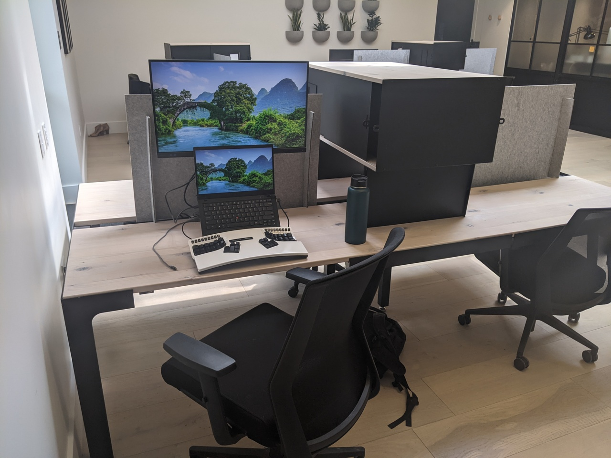
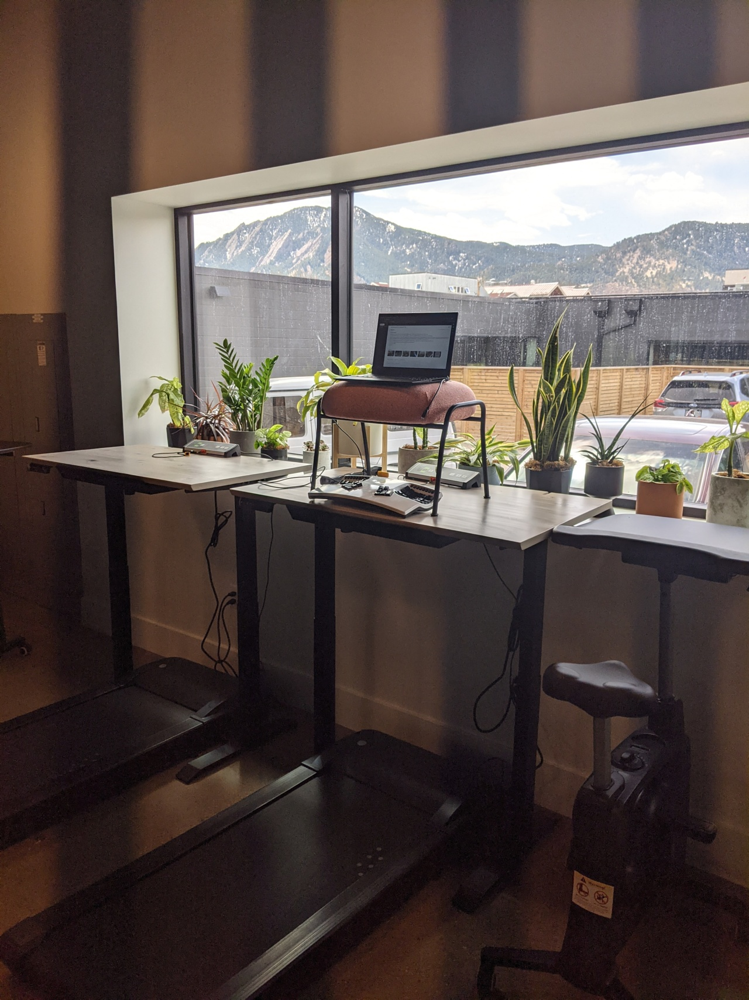
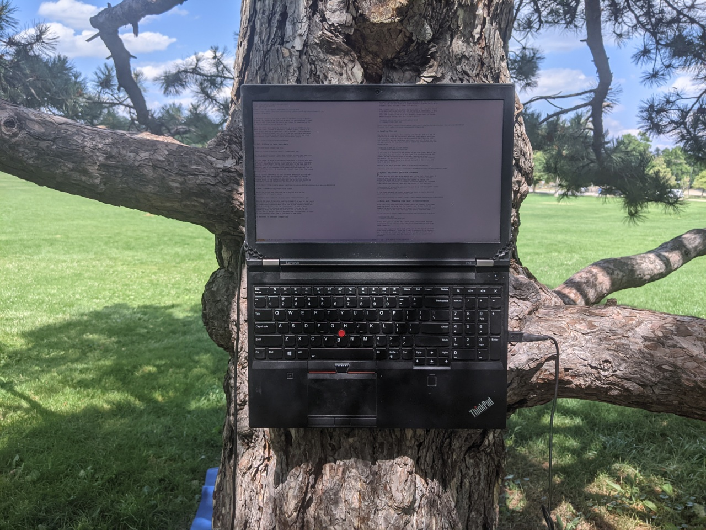
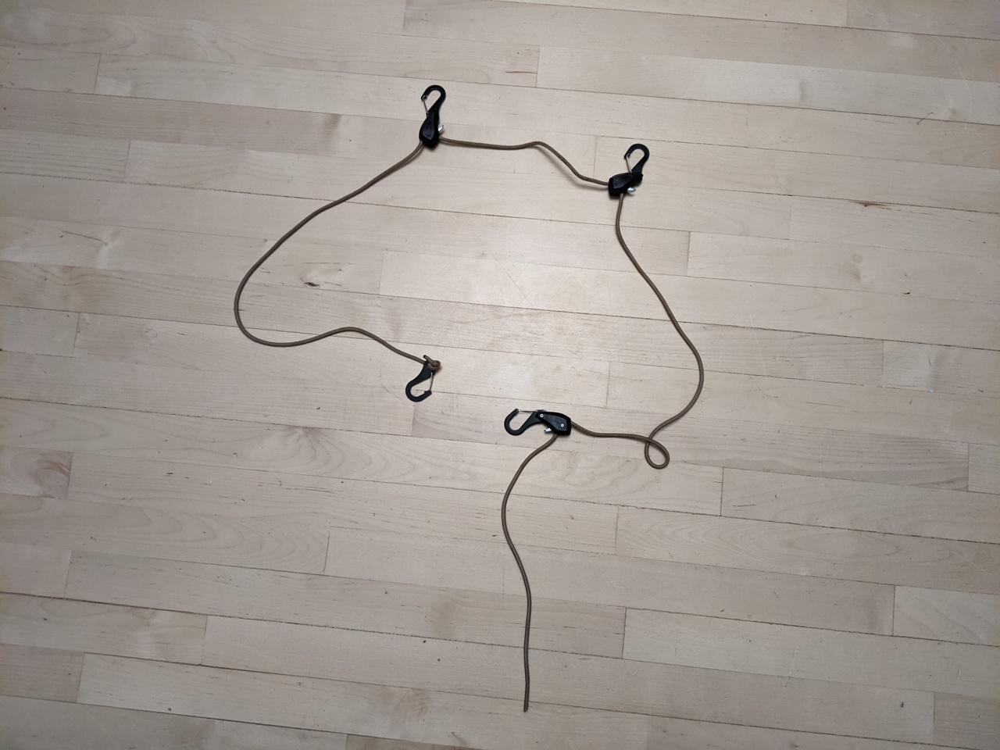

Ergo update:
co-working experiment
In November I moved a bit west of where I had been living in Boulder, Colorado. My reasoning was that not a whole lot was happening in town, so may as well live closer to nature and closer to snowboarding. It has been a wonderful winter and spring!
Lately I've found myself wanting to spend more time in Boulder – taking movement classes, visiting friends, etc. So, I tried out renting a dedicated desk at a co-working space called kiln. Overall Kiln was great – nice natural light, beautiful space, and friendly people.
Oof: Sitting -> more back-pain
My dedicated desk looked like this:

So, not a sit/stand desk. There are rentable offices that have nice sit/stand desks, however, those spaces cost quite a bit more.
So, this ended up being an accidental experiment in sitting much more than usual for about 2 months. Unfortunately, after just a few weeks of this, I found myself facing lower back pain in the same spot I'd experienced it in the past, during snowboarding. It's entirely possible that I just happened to do something funky that day, but it seems unlikely, since I'd snowboarded a couple dozen times that season without issue.
So, my current hypothesis is that increased amounts of sitting had made my lower back more prone to injury. This theory is further supported, as it's been getting much better in the month since I stopped going to the coworking space and did not go into Boulder as frequently (involves a fair bit of sitting in a car or bus).
Rad: Treadmilling with nice views
One of the things that convinced me to try out Kiln was the availability of treadmill desks:

When in the space I typically used the treadmill an hour or two, which meant most of my time was sitting. I probably could have avoided this by intentionally spending most of my time at the treadmill desks and using a leaning stool like the Focal Mogo$ to make it more sustainable. This probably would have worked fine, as the the treadmill desks did not get all that much use by others in the office. But it wouldn't work if everyone took this approach, so could be considered an unfair use of the space in some sense.
Getting back into outdoor computing
It occurred to me that it was ironic that I was renting co-working space, as I so enjoy outdoor computing and would love to encourage others to do it more. Now that the weather is a bit warmer and the park restrooms are open again, I've been computing in the park in Boulder. Here is what my computer looks like while writing this post:

See my "Tree Based Computing" post for more details on how this works. The blue behind the tree is a yoga mat which I've used for a bit of supine computing.
I'm very stoked with the shift to using parks / creekside areas as my "home base" in Boulder rather than an indoor space. It's been quite literally a breath of fresh air.
Side-note: new approach for around-the-tree paracord
I recently realized a small improvement to my tree setup. Previously I'd been putting a paracord tie-down$ around the tree, and using carabiners to attach to it. By using the adjustable clip hooks from three of these tie-downs, it's now all in one convenient unit:

The hooks on the ends clip together to secure it around the tree. The other two hooks are clipped onto the reusable "Mille-Ties"$ which go around the hinges.
I realized that the use of "Mille-Ties" is also different from what I describe in prior posts, where I instead used stiffer reusable zip-ties. Since the "Mille-Ties" are softer and bendier, there is no risk they will damage the laptop (particularly the screen). They are also generally less obtrusive to leave on the laptop.
Footnotes
Some links are amazon affiliate links, which sometimes send me a bit of money when you make purchases after clicking them. The purpose of this blog is sharing information and ideas, not making money. But I figure I may as well add them, and I appreciate usage of them! If you do feel inclined to show your appreciation for these posts directly in monetary form, feel free to buy me a coffee.